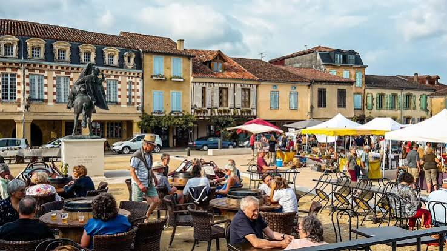

Identité gasconne
et art de vivre


⟹ Le panache, la table et la fête ⟸
Le caractère gascon s'est forgé dans un pays de petites fermes, de bastides et de terres de polyculture, entre Gers, Landes, Béarn et Bigorre. Terre longtemps rurale et modeste, la Gascogne a bâti sa réputation sur un trait bien particulier : le panache, cette manière d'affronter les difficultés avec bravoure et un brin d'exagération théâtrale, plus proche de la fierté que de la vantardise gratuite. Ce trait, popularisé par la légende de d'Artagnan, s'enracine en réalité dans une histoire ancienne de cadets partis chercher fortune loin de leur province pauvre.

Cette identité s'exprime aujourd'hui autant à table qu'à la fête. La cuisine gasconne, fondée sur l'élevage du canard et de l'oie, a donné foie gras, confit et magret, tandis que les vignobles de l'Armagnac produisent la plus ancienne eau-de-vie de vin de France. Le rugby, introduit dans la région à la fin du XIXe siècle, est devenu un véritable ciment social : les clubs d'Auch, de Dax ou de Mont-de-Marsan rassemblent des villages entiers les jours de match.
« Que cau víver, e víver plan. »
Dicton gasconL'été venu, férias et fêtes votives rythment le calendrier : bandas dans les rues, repas partagés, courses landaises ou corridas selon les villes, dans une ambiance qui mêle tradition rurale et goût affirmé pour la convivialité.
Une identité de carrefour : la Gascogne historique n'est pas une région administrative actuelle mais un vaste ensemble du Sud-Ouest, entre Atlantique, Garonne et Pyrénées. Cette diversité explique qu'il existe plusieurs façons d'être gascon : landaise, gersoise, béarnaise, bigourdane ou commingeoise, avec des traditions voisines mais jamais totalement identiques.
Les cadets de Gascogne : sous l'Ancien Régime, de nombreux fils cadets de familles nobles ou modestement nobles, disposant de peu d'héritage, cherchent une carrière dans les armes ou au service des grands. Leur réputation de courage, d'audace et parfois de susceptibilité nourrit progressivement l'image du Gascon fier et batailleur que la littérature amplifiera.
La table comme lieu social : l'art de vivre gascon ne se résume pas à quelques produits célèbres. Marchés, repas de chasse, repas associatifs, fêtes de village et grandes tablées ont longtemps constitué des lieux essentiels de sociabilité. Canard, porc, volailles, haricots, ail, vins locaux, Floc et Armagnac s'inscrivent dans cette culture du repas partagé.
Des traditions différentes selon les territoires : la course landaise appartient surtout aux Landes et à l'ouest du Gers, tandis que le rugby s'est enraciné dans de nombreuses villes du Sud-Ouest. Bandas, férias, fêtes patronales et marchés prolongent cette sociabilité, mais leurs formes varient fortement d'un pays gascon à l'autre.
Le panache, entre histoire et littérature : le Gascon bravache est en partie une construction littéraire. D'Artagnan et les cadets de Gascogne lui ont donné une visibilité immense, mais derrière le cliché se trouvent des réalités sociales : mobilité des cadets, service militaire, attachement au pays d'origine et forte culture de l'honneur.
Une identité toujours vivante : gastronomie, rugby, musique de rue, langue occitane gasconne et fêtes locales continuent de produire un sentiment d'appartenance. Cette identité contemporaine se transmet moins par des frontières que par des pratiques, des souvenirs familiaux et une manière de raconter le territoire.
Le gascon, dialecte occitan : la langue qui porte encore aujourd'hui une partie de cet art de vivre, à retrouver dans la fiche dédiée.
La légende de d'Artagnan et des mousquetaires : le panache gascon incarné par son ambassadeur littéraire le plus célèbre, à retrouver dans la fiche dédiée.
La toponymie gasconne : les noms de lieux du pays racontent aussi cette histoire rurale et cette identité de terroir.
L'art de vivre gascon se découvre au fil des marchés, des tables et des fêtes de village.
Auch, capitale de la Gascogne, pour son marché et ses restaurants de tradition.
Condom et le pays d'Armagnac, pour visiter chais et distilleries.
Dax et Mont-de-Marsan, hauts lieux des férias landaises.
Les marchés au gras du Gers, en hiver, pour rencontrer producteurs et éleveurs.